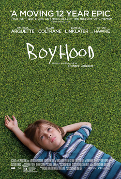

Richard Linklater
2014
165 minutes
TITLE: Boyhood TEXT PLACEHOLDER 231
You assume you're going to hate this even though it's Richard Linklater and you've loved a great deal of his other films. You're not particularly keen on Ethan Hawke, and when this came out you weren't at a part of your life where you were particularly excited to watch him be a divorced dad.
By the time you get around to watching this, oh fuck. You're not a dad, you don't want to be one, and it's out-of-range enough for you now where it doesn't matter much whether becoming one would be on your radar or not. Being a divorced dad like Ethan Hawke's character isn't something you identify with or are aspiring to do. This pathway being cut off to you strangely makes this film more approachable since it's no longer a reminder that you're currently failing to do something normal people do. Or even failing to fail at something normal people do.
You know the whole deal with this is that it was shot over twelve years with the same actors aging in real time--and aging into adulthood, in the case of the young actors. It seems a little gimmicky, like a lot of Linklater films, but Linklater's gimmicks are often worth the indulgence.
This hits pretty hard and is way better than you thought it would be. The scenes with the abusive alcoholic stepfather are particularly realistic and visceral and difficult to watch. You're pretty sure someone involved with creating those scenes had some personal experiences to draw on. Equally cringey but on the funny side are the scenes where Ethan Hawke as the dad is trying a little too hard to be a "cool-dad" to the kids, dealing with them slightly stoned or tipsy and clearly not quite grown up himself during the early years. He and Patricia Arquette both sell themselves well as imperfect parents who clearly love their children and are trying hard to be good parents while occasionally failing in that role. No one's parents are saints, and it's pretty refreshing to see someone fuck it up a little without being made into villains for it. Ultimately they are imperfect but loving, and the kids seem to make it to adulthood, not necessarily completely undamaged but without an unmanageable amount of trauma. Just being there for a kid and caring is more than a lot of parents manage, and you love seeing the low-stakes drama of it all unfold.
Time to choose something different: